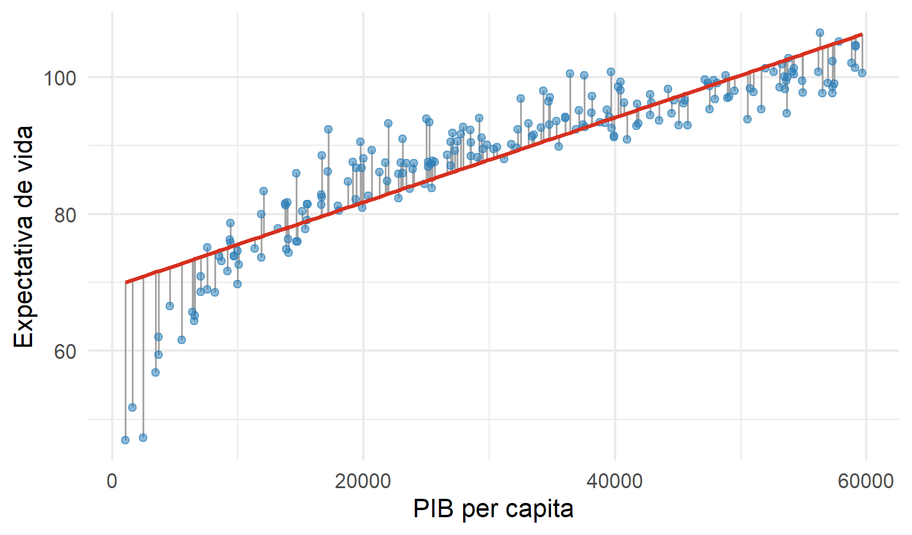
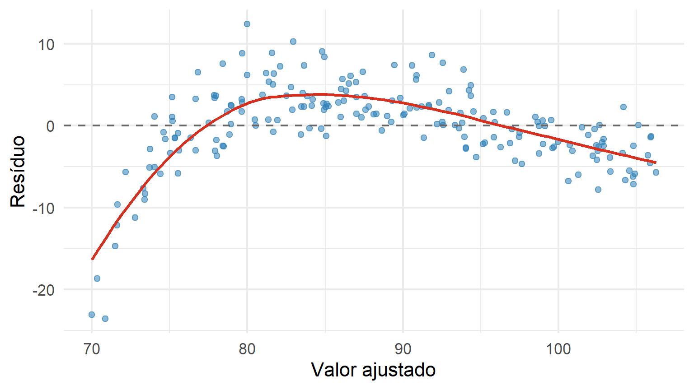

(Intercept) pib
6.935727e+01 6.186213e-04 Parte I : Aprendizado Supervisionado
Modelos Lineares: Regressão e Classificação
Onde estamos?
Na Semana 1, formulamos o problema de aprendizado de forma geral. Para regressão,
\[ \mathcal D_n \longrightarrow \widehat g \approx r(x)=E(Y\mid X=x) \]
Agora precisamos escolher uma classe de funções para aproximar \(r(x)\).
Começaremos pela classe mais simples e interpretável: modelos lineares.
Modelo e treinamento
A pergunta central
Temos uma função de regressão desconhecida:
\[ r(x)=E(Y\mid X=x) \]
E se aproximarmos essa função por
\[ \boxed{g(x)=\beta_0+\beta_1x?} \]
Essa escolha define uma classe de modelos.
A classe de modelos lineares
No caso de uma única covariável:
\[ \mathcal G_{\text{linear}} = \left\{ g(x)=\beta_0+\beta_1x: \beta_0,\beta_1\in\mathbb R \right\} \]
Os dados não escolhem a classe.
Nós escolhemos a classe; o treinamento escolhe os parâmetros.
Do pipeline ao modelo linear
\[ \boxed{\text{Dados}} \rightarrow \boxed{\text{Classe linear}} \rightarrow \boxed{\text{Treinamento}} \rightarrow \boxed{\widehat g(x)} \]
Para a classe linear, treinar significa encontrar
\[ \widehat\beta_0,\widehat\beta_1 \]
Exemplo condutor: PIB × expectativa de vida

Uma reta candidata

Pergunta:
\[ \boxed{\text{Como escolher a melhor reta?}} \]
Erro de uma observação
Para a observação \(i\):
\[ \widehat y_i=g(x_i) \]
e o erro observado é
\[ e_i=y_i-\widehat y_i \]
O treinamento precisa transformar esses erros em um único critério.
Perda quadrática
Sabemos que:
\[ L(y,\widehat y)=(y-\widehat y)^2 \]
Para toda a amostra:
\[ RSS(\beta_0,\beta_1) = \sum_{i=1}^n \left[ y_i-(\beta_0+\beta_1x_i) \right]^2 \]
Mínimos quadrados
O treinamento resolve
\[ \boxed{ (\widehat\beta_0,\widehat\beta_1) = \arg\min_{\beta_0,\beta_1} \sum_{i=1}^{n} \left[ y_i-(\beta_0+\beta_1x_i) \right]^2 } \]
Não estamos apenas “traçando uma reta”.
Estamos resolvendo um problema de otimização.
Várias retas, diferentes perdas

A reta de MQO é aquela que minimiza a soma dos erros quadráticos.
Ajustando o modelo em R
O algoritmo estima os parâmetros a partir da amostra.
Modelo estimado
Escrevemos
\[ \widehat g(x) = \widehat\beta_0+\widehat\beta_1x \]

Interpretando os coeficientes
Para
\[ \widehat g(x)=\widehat\beta_0+\widehat\beta_1x, \]
- \(\widehat\beta_0\): valor previsto quando \(x=0\);
-
\(\widehat\beta_1\): variação média prevista em \(Y\) para uma unidade adicional de \(X\).
Uma interpretação algébrica pode não ter interpretação substantiva útil fora da região observada dos dados.
Predição
Para uma nova observação \(x_0\):
\[ \widehat y_0 = \widehat g(x_0) = \widehat\beta_0+\widehat\beta_1x_0 \]
O modelo transforma covariáveis em predições.
Valores ajustados e resíduos
\[ \widehat y_i=\widehat g(x_i) \]
\[ e_i=y_i-\widehat y_i \]
Logo,
\[ \boxed{y_i=\widehat y_i+e_i} \]
Visualizando os resíduos

As linhas verticais representam os resíduos.
Regressão linear múltipla
Com \(p\) covariáveis:
\[ g(\mathbf x) = \beta_0+ \beta_1x_1+\cdots+\beta_px_p \]
ou
\[ g(\mathbf x) = \beta_0+\sum_{j=1}^{p}\beta_jx_j \]
A ideia não muda: escolhemos os coeficientes que minimizam a perda na amostra.
Forma matricial
\[ \mathbf y = \mathbf X\boldsymbol\beta+\boldsymbol\varepsilon \]
A solução de mínimos quadrados, quando existe de forma única, é
\[
\widehat{\boldsymbol\beta}
=
(\mathbf X^\top\mathbf X)^{-1}
\mathbf X^\top\mathbf y
\]
A derivação completa fica no material complementar da Semana 2.
Síntese
\[ \boxed{ \text{Classe linear} + \text{perda quadrática} + \text{otimização} = \text{MQO} } \]
O resultado do treinamento é uma função
\[ \widehat g(x) \]
que poderá ser utilizada para novas observações.
Predição e generalização
A pergunta muda
No treinamento perguntamos:
Qual reta minimiza o erro nos dados observados?
Agora perguntamos:
Essa reta funcionará bem em dados que ainda não vimos?
Essa é uma pergunta sobre generalização.
Erro quadrático médio de treinamento
\[ MSE_{\text{treino}} = \frac{1}{n} \sum_{i=1}^{n} (y_i-\widehat y_i)^2 \]
E
\[ RMSE_{\text{treino}} = \sqrt{MSE_{\text{treino}}} \]
Quanto menor, melhor o ajuste à amostra utilizada no treinamento.
RMSE: interpretação
\[ RMSE = \sqrt{ \frac1n \sum_{i=1}^{n} (y_i-\widehat y_i)^2 } \]
- mesma unidade de \(Y\);
- penaliza mais fortemente erros grandes;
- pode ser calculado em treino, validação ou teste.
Sempre pergunte: RMSE calculado em qual conjunto de dados?
O coeficiente de determinação
\[ R^2 = 1- \frac{ \sum_i(y_i-\widehat y_i)^2 }{ \sum_i(y_i-\bar y)^2 } \]
Interpretação usual: fração da variabilidade de \(Y\) explicada pelo modelo na amostra avaliada.
\(R^2\) não é generalização
Um modelo pode apresentar
\[ R^2_{\text{treino}}\uparrow \]
simplesmente por se tornar mais flexível.
Portanto,
\[ \boxed{ R^2\text{ alto no treino} \not\Rightarrow \text{boa predição fora da amostra} } \]
O modelo linear parece adequado?
Voltemos aos resíduos.

Um padrão nos resíduos
Se o modelo capturasse adequadamente a estrutura média,
\[ E(e\mid X=x)\approx 0 \]
Um padrão sistemático sugere que
\[ r(x) \not\approx \beta_0+\beta_1x \]
O problema pode estar na classe de modelos escolhida.
Linearidade é uma hipótese sobre a função
A regressão linear não afirma que os pontos precisam formar uma reta perfeita.
Ela supõe que a média condicional pode ser representada por
\[ E(Y\mid X=x) = \beta_0+\beta_1x \]
O ruído continua existindo ao redor dessa função.
Transformação simples
Como os dados foram gerados com relação aproximadamente logarítmica, podemos considerar
\[ g(x) = \beta_0+\beta_1\log(x) \]

Ainda é um modelo linear?
Sim! Ele é linear nos parâmetros:
\[ g(x) = \beta_0+\beta_1\log(x) \]
A covariável foi transformada, mas
\[ \beta_0,\beta_1 \]
continuam entrando linearmente no modelo.
Comparando duas classes
Linear em \(x\)
\[ g_1(x)=\beta_0+\beta_1x \]
Mais simples, porém incapaz de representar a curvatura observada.
Linear em \(\log(x)\)
\[ g_2(x)=\beta_0+\beta_1\log(x) \]
Introduz uma transformação escolhida pelo analista.
Mas e se não conhecermos a transformação?
Podemos ampliar sistematicamente a classe:
\[ g(x) = \beta_0+ \beta_1x+ \beta_2x^2+ \cdots+ \beta_px^p \]
Agora surge uma nova questão:
\[ \boxed{\text{Qual grau }p\text{ devemos escolher?}} \]
Classificação probabilística
Probabilidade posterior
\[ \boxed{\eta(\mathbf x)=P(Y=1\mid\mathbf X=\mathbf x)} \]
Regressão logística como plug-in
Modelando a probabilidade
A regressão logística assume
\[ \boxed{ \eta(\mathbf x) = \frac{ \exp(\beta_0+\mathbf x^t\boldsymbol\beta) }{ 1+\exp(\beta_0+\mathbf x^t\boldsymbol\beta) } } \]
ou
\[ \boxed{ \operatorname{logit}\{\eta(\mathbf x)\} = \beta_0+\mathbf x^t\boldsymbol\beta } \]
Depois do ajuste
Estimamos
\[ \widehat{\boldsymbol\beta} \]
e obtemos
\[ \widehat\eta(\mathbf x) = \frac{ \exp(\widehat\beta_0+\mathbf x^t\widehat{\boldsymbol\beta}) }{ 1+\exp(\widehat\beta_0+\mathbf x^t\widehat{\boldsymbol\beta}) } \]
A classificação é então produzida por um cutoff
Fronteira de decisão logística
Com cutoff \(0.5\):
\[ \widehat\eta(\mathbf x)>0.5 \]
é equivalente a
\[ \boxed{ \widehat\beta_0+ \mathbf x^t\widehat{\boldsymbol\beta} > 0 } \]
Portanto, a regressão logística produz uma fronteira linear no espaço original das covariáveis
O ponto principal nesta disciplina
Não precisamos reestudar toda a teoria de modelos lineares generalizados
Aqui, regressão logística é importante porque ilustra claramente:
\[ \boxed{ \text{estimar probabilidade} \rightarrow \text{aplicar regra de decisão} } \]
Regressão e classificação lado a lado
| Regressão | Classificação |
|---|---|
| \(E(Y\mid X)=\beta_0+X^t\beta\) | \(\operatorname{logit}(\eta)=\beta_0+X^t\beta\) |
| saída quantitativa | probabilidade |
Probabilidade e decisão
\[ \boxed{\widehat g_c(\mathbf x)=I\{\widehat\eta(\mathbf x)>c\}} \]
EST335 — Semana 2